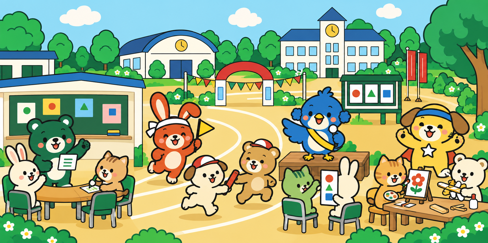
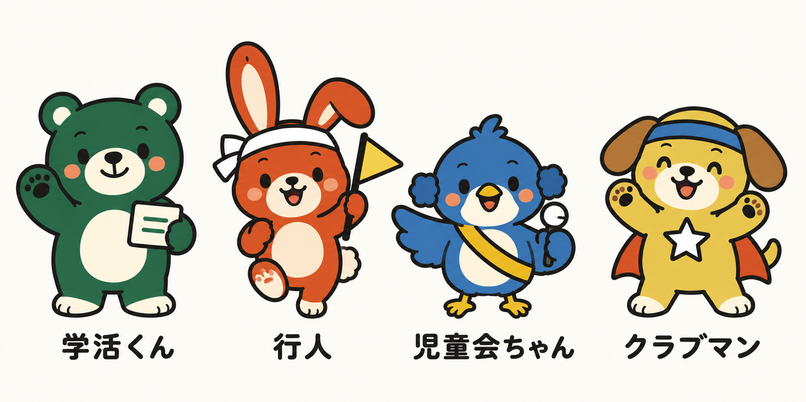
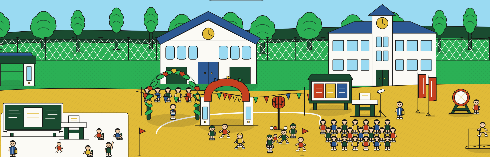

特活広場のHPの太い輪郭と配色をもとに、くま・うさぎ・小鳥・子犬の4人を作りました。広場の仲間もすべて動物にそろえ、活動がひと目で分かる場面にしています。

くまの学活くんと、机を囲んだ話合い。黒板と記録用紙で学級会を表現。
うさぎの行人が応援するリレー。旗・体操服・トラックで運動会を表現。
小鳥の児童会ちゃんがマイクで呼びかけ。みんなで進める集会を表現。
子犬のクラブマンと、絵や模型づくり。好きなことに取り組む時間を表現。
校舎と体育館はクリーム色と青い屋根、校庭は温かな黄色。人間らしい造形を離れ、短い手足・丸い体・読み取りやすい顔で統一しました。緑・朱・青・黄と、カード・旗・マイク・星のマントは引き継いでいます。
このページはイラストの構図と絵柄を確認するための試作です。サイトに組み込む際は、画面幅に合わせた構図と画像容量を調整します。

